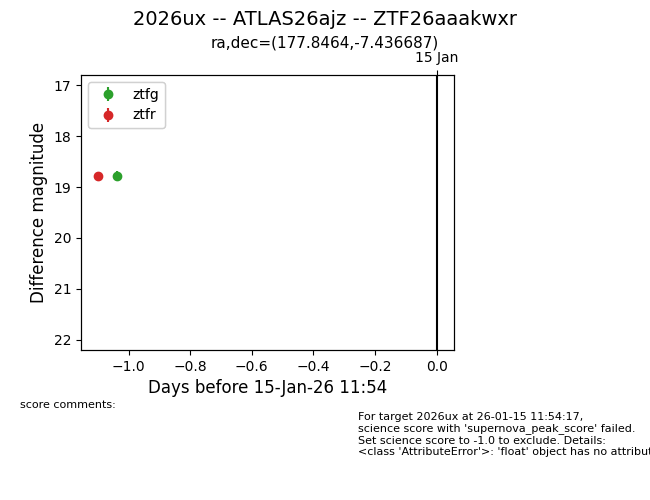
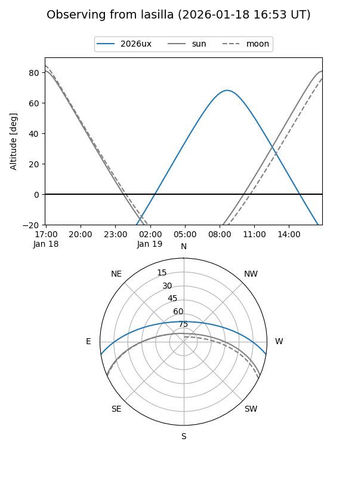
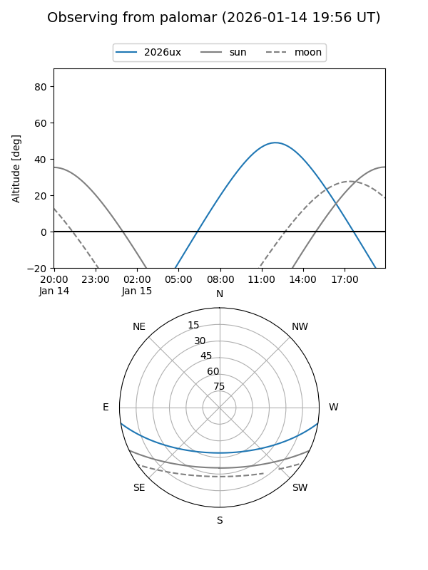
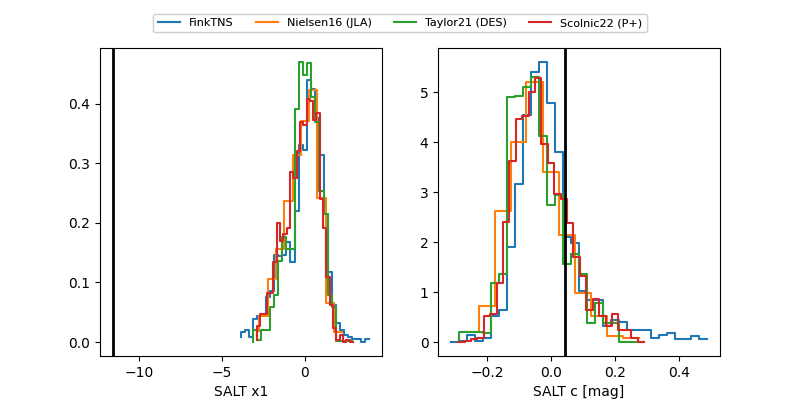

2026ux
Target 2026ux at 2026-01-14 23:15
Aliases and brokers:
FINK: link
Lasair: link
ALeRCE: link
TNS: link
YSE: link
alt names
ZTF26aaakwxr (ztf,fink_ztf)
2026ux (tns,yse)
ATLAS26ajz (atlas)
Coordinates:
equatorial (ra, dec) = 177.8464,-7.43669
equatorial (HMS+DMS) = 11:51:23.13,-07:26:12.07
galactic (l, b) = (277.9744,+52.50072)
Flags:
Photometry:
last ztfg=18.79, ztfr=18.78
1 ztfg, 1 ztfr detections
Lightcurve

Visibility


Additional plots
